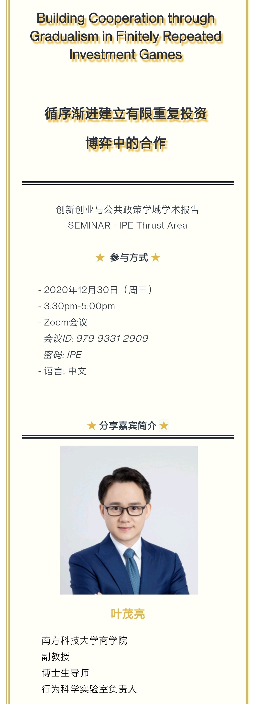
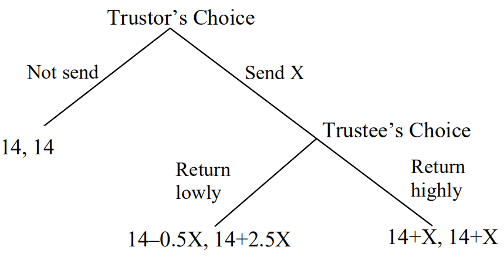
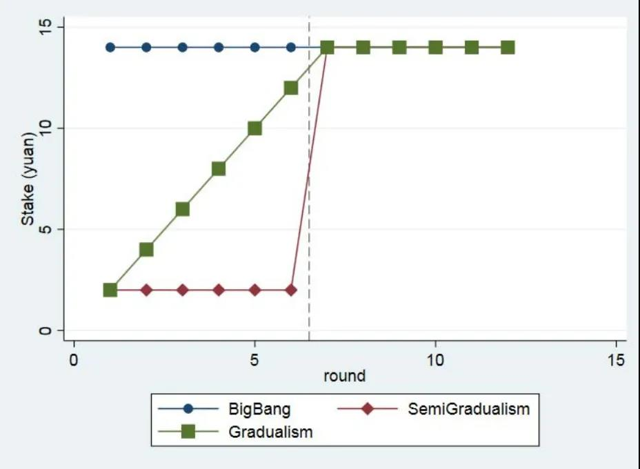

应香港科技大学广州校区邀请，叶茂亮副教授于2020年12月30日赴香港科技大学广州校区开展题为“Building Cooperation through Gradualism in Finitely Repeated Investment Games”的讲座。叶教授详细介绍了关于甲方-乙方（或投资方-被投资方，信任方-被信任方，委托人-代理人）投资关系中的合作问题的重要性、难度及相关机制，并阐述了对循序渐进机制猜想的实验验证与理论探究，并和香港科技大学广州校区的研究人员就该研究做了充分讨论。叶老师还参观了香港科技大学广州校区筹办区域的办公环境和广州校区沙盘。

Synopsis
Title: Building Cooperation through Gradualism in Finitely Repeated Investment Games
This paper employs a finitely repeated binary investment (trust) experiment to examine the effect of gradualism -- increasing the stake of investment slowly over time rather than requiring a high stake of investment immediately -- in trustor-trustee cooperation building. The experimental results suggest that gradualism helps build high-stake cooperation in the investment relationship: the gradualism treatment induces a higher initial reciprocation rate by the trustee, which leads to a higher rates of subsequent investment from the trustor and successful mutual cooperation between the trustor and the trustee. Our main results are more consistent with a behavioral model with adaptive trustors featuring conditional cooperation, rather than the standard game-theoretic model with both rational trustors and trustees, or a reputation model with two private types (rational or reciprocal) of trustees.

The Decision Tree in Each Round of the Binary Investment Game
Stake Patterns of the Treatments